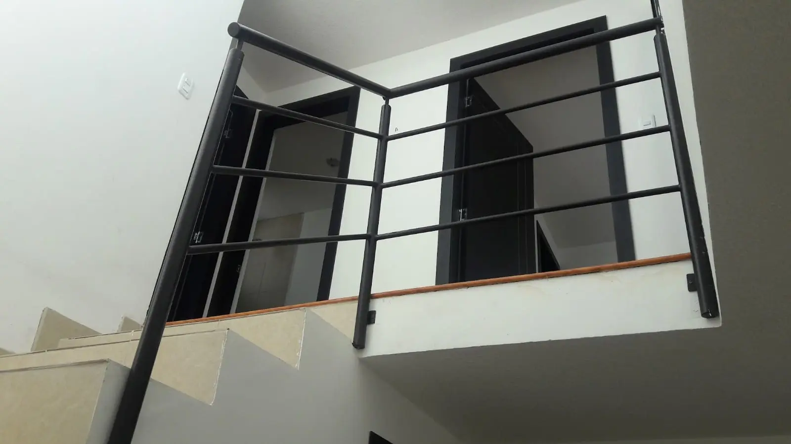

HABILIDADES
Cerrajeria en el centro de Quito. Fabricación y mantenimiento en obras de construcción.
Proformas de trabajos a realizar y medición en obra

Fabricación e instalación de puertas, ventanas, pasamanos, escaleras, entre otros.

Mantenimientos preventivos y correctivos.

Otras habilidades que se requiera o se necesite.

PASAMANOS Y ESCALERAS METÁLICAS
- Pasamanos de hierro
- Pasamanos de acero inoxidable
- Escaleras en espiral
- Escaleras metálicas
- Pasamanos con vidrio templado
- Escaleras flotantes


Lo Que Dicen Nuestros Clientes
Tannya Terán
«Excelente trabajo, recomendado.»
Preguntas frecuentes
¿Qué trabajos de cerrajería y metalmecánica hacen en Quito?
Fabricamos e instalamos puertas metálicas, puertas de garaje y portones, gradas y escaleras metálicas, pasamanos de acero inoxidable y de hierro, ventanas y cubreventanas en hierro y aluminio, estructuras metálicas, fachadas de Alucobond y remodelaciones como cubiertas de policarbonato y piso flotante.
¿Dónde queda el taller y qué horario tienen?
El taller está en Quito, en Pedro de Zumárraga y Álvarez de Cuéllar (sector Toctiuco). Atendemos de lunes a sábado de 07:00 a 17:00; domingos cerrado.
¿Cómo se pide una cotización?
El primer contacto es por WhatsApp al +593 99 568 0603. Coordinamos una visita para medir en obra y con esa medida entregamos el precio exacto.
¿Cobran la visita para medir?
No. La medición en obra es sin costo y es la base para dar un presupuesto exacto en un trabajo a medida.
¿En qué zonas trabajan?
Quito y los valles: Cumbayá, Tumbaco, Calderón, Sangolquí y Nayón. Para obra grande fuera de esa zona, consúltanos.
¿Cuántos años de experiencia tienen?
Más de 22 años trabajando hierro, acero, acero inoxidable, aluminio, vidrio templado y Alucobond, con taller propio en Quito.